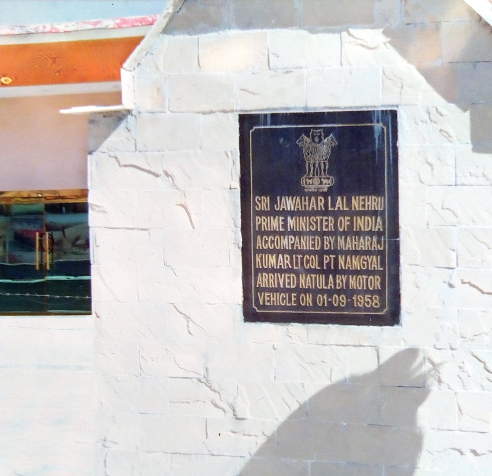

History · 1967
The Battle of Nathu La, 1967: When India Answered China

History remembers India's 1962 war with China as a wound. Far fewer people remember that just five years later, at two windswept passes in Sikkim, the Indian Army met the People's Liberation Army again — and this time refused to yield. The clashes at Nathu La in September 1967, and at Cho La the following month, are among the most important and least-told chapters of India's military history.
My poem Echoes of Nathu La was written for the jawans who stood in that cold. It opens "Beneath the indifferent stars of Nathu La, where silence speaks louder than war's roar." This is the story behind those lines.
A border still raw from 1962
Nathu La is a mountain pass at over 14,000 feet on the border between Sikkim and Tibet. In the years after the humiliation of 1962, the boundary here remained tense and ill-defined, with Indian and Chinese troops dug in within shouting distance of one another. In the summer of 1967, Indian soldiers of the 2 Grenadiers and other units began laying a wire fence to mark the watershed boundary, and Chinese troops objected violently.[1]
On 11 September 1967, as the fencing party worked, Chinese forces opened machine-gun fire from the heights. What followed was not a one-sided rout but a fierce, days-long artillery and infantry duel in which Indian gunners pounded Chinese positions with sustained accuracy.[1]

We stand where many dare not tread, in the shadows of peaks that know our tales.
The cost, and the answer
The fighting at Nathu La lasted until 14 September. A few weeks later, on 1 October, a second clash erupted at the nearby Cho La pass. Indian casualties were heavy — roughly 88 soldiers killed and many more wounded — but Chinese losses were considerably higher, and crucially, the Indian Army held every position it set out to defend.[1][2]
Under commanders such as Major General Sagat Singh, who refused to pull his guns back, the army demonstrated that the lessons of 1962 had been learned. The Chinese did not push across the Sikkim frontier again. For a nation still carrying the shame of its earlier defeat, Nathu La was quiet, costly proof that the Indian soldier could stand toe to toe with a larger adversary and not break.

Why it still matters
Nathu La rarely appears in popular memory the way Kargil or 1971 does. There was no triumphant march, no surrender ceremony — only a fence built, a line held, and a price paid in the snow. But that is precisely the kind of sacrifice my book tries to honour: the courage that earns no parade.
The soldiers of 1967 asked for nothing. In the words of the poem, they wished only to "remember us not as heroes craving fame, but as sons who bore the weight of a motherland." More than half a century later, as the same Himalayan frontier again makes headlines, their steadiness is worth remembering. They drew a line in the ice, and they kept it.
Sources & further reading
- "Nathu La and Cho La clashes," Wikipedia.
- Indian Army, official records — indianarmy.nic.in.
All images via Wikimedia Commons, used under the licences shown in each caption.